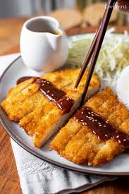

Chicken Katsu
Description
Chicken Katsu is a Japanese dish consisting of breaded and deep-fried chicken cutlets, typically served with a tangy sauce and rice.

Ingredients
- 2 boneless, skinless chicken breasts
- Salt and pepper to taste
- 1/2 cup all-purpose flour
- 2 large eggs, beaten
- 1 cup panko breadcrumbs
- Vegetable oil for frying
- Katsu sauce for serving
Instructions
- Season the chicken breasts with salt and pepper.
- Dredge each chicken breast in flour, shaking off the excess.
- Dip the chicken into the beaten eggs, then coat with panko breadcrumbs.
- Heat vegetable oil in a large skillet over medium-high heat.
- Fry the chicken until golden brown and cooked through, about 4-5 minutes per side.
- Drain on paper towels and slice into strips.
- Serve with katsu sauce and rice.
Back to Home